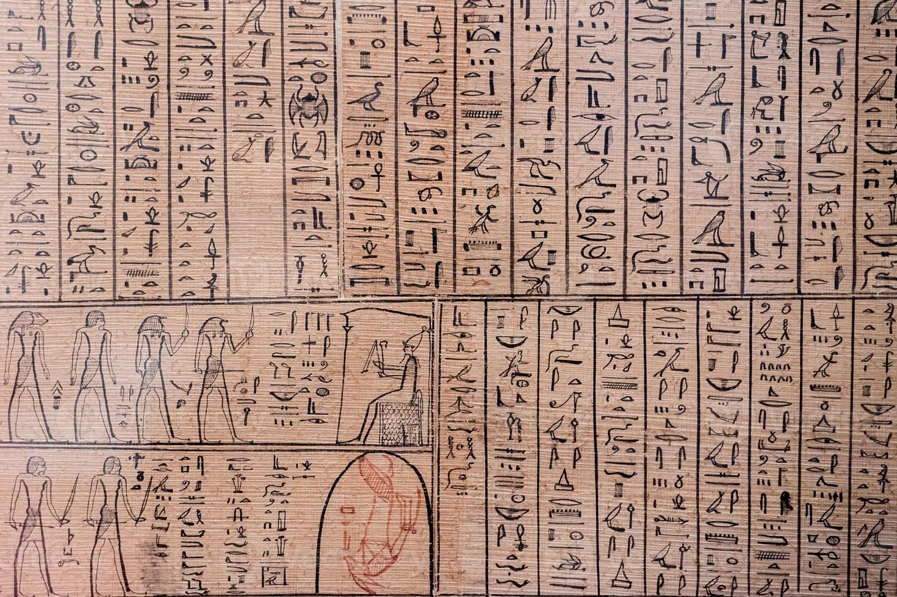

The mysteries of the Piramids of Giza
More than 4,500 years ago, in de desert of Egypt, the Piramids of Giza were built. They are huge and very precise. Even today , people do not know exactly how they were made.
Their alignmet with the stars and the heavy stones blocks make them a mystery that fascinates historians, scientists and travelers all over the world.
The Pyramids of Giza were built during Old kingdom of Egypt, specially in the Fourth Dynasty, approximartely 4,500 years ago. The Great Pyramid of Khufu was constructed arround 2580 B.C., the Pyramid of khafre arround 2570 B.C., and the Pyramid of Menkaure arround 2510 B.C.
These pyramids were built as a tombs for the phoraohs and were part of a complex that included temples and other funerary structures. Even today, it is not exactly known how the ancient Egyptians managed to build them with such precision and using such heavy stone blocks.
They were tombs for the pharaohs and symbols of power. They were also related to beliefs about the afterlife. The pyramids were designed to protect the pharaohs' bodies and their belongings for eternity. They represented the connection between the pharaohs and the gods, showing their divine status. Additionally, the pyramids served as a demonstration of the kingdom's wealth, organization, and advanced engineering skills.

The ancient Egyptians used a writing system called hieroglyphs. Hieroglyphs were made up of symbols and pictures, each representing sounds, words, or ideas. They were carved on temple walls, tombs, and monuments, and written on papyrus. Writing was mainly used by priests and scribes for religious texts, official records, and keeping history. It played a very important role in preserving the culture and knowledge of ancient Egypt.

Over time, the Old Kingdom became weaker because of fights and changes in the government.
People stopped using the pyramids the same way, and some were looted.
Later, other countries, like the Assyrians, Persians, and Greeks, invaded Egypt.
Weak rulers and money problems also made the kingdom weaker.
Finally, Egypt became part of other empires.
Even today, the culture, buildings, and knowledge of ancient Egypt are very important and admired around the world.
Their alignment with the stars, the precision of the blocks, and the transport techniques raise many questions.
Today they are a World Heritage Site and attract millions of tourists every year.
Scientists and historians still study how the ancient Egyptians built them with such accuracy.
Many mysteries remain, like how they moved the huge stones and what tools they used.
The pyramids continue to inspire architects, engineers, and travelers from all over the world.
They are a symbol of human creativity, intelligence, and the power of ancient civilizations.
Quick Fast
- Age:4,500 years
- Location: Giza Necropolis, near Cairo
- Pharaohs: Khufu (Cheops), Khafre, Menkaure